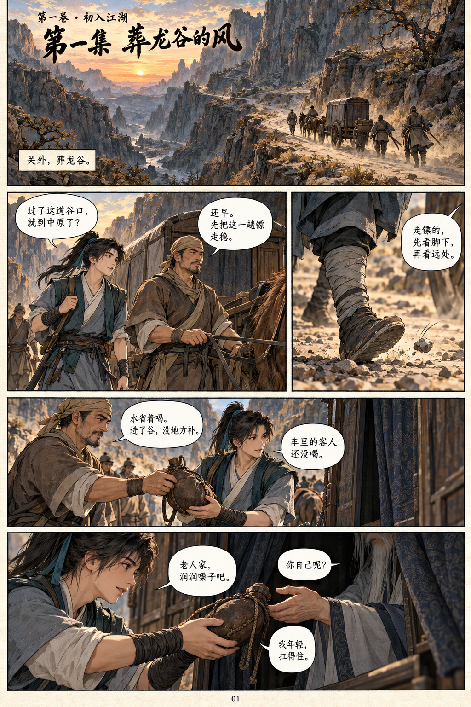
本页逐格文字
01关外，葬龙谷。
02宇文逸：过了这道谷口，就到中原了？
老镖师：还早。先把这一趟镖走稳。
03老镖师：走镖的，先看脚下，再看远处。
04老镖师：水省着喝。进了谷，没地方补。
宇文逸：车里的客人还没喝。
05宇文逸：老人家，润润嗓子吧。
车中人：你自己呢？
宇文逸：我年轻，扛得住。
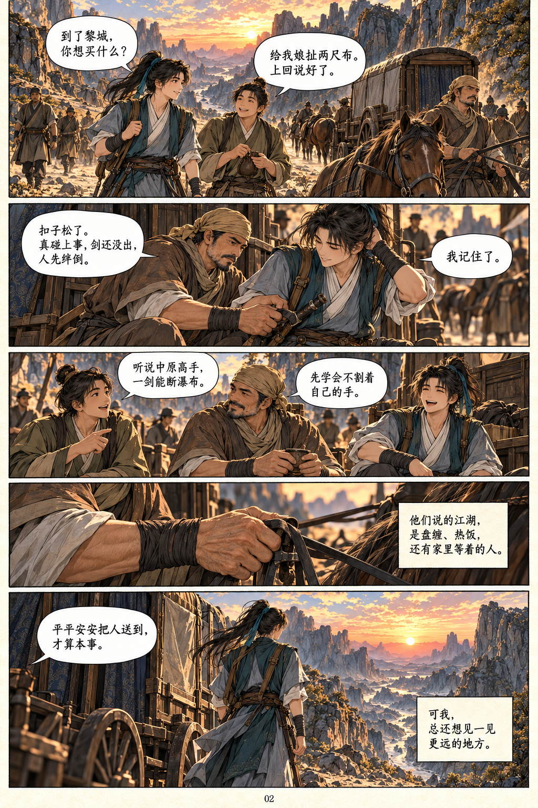
本页逐格文字
01宇文逸：到了黎城，你想买什么？
年轻镖师：给我娘扯两尺布。上回说好了。
02老镖师：扣子松了。真碰上事，剑还没出，人先绊倒。
宇文逸：我记住了。
03年轻镖师：听说中原高手，一剑能断瀑布。
老镖师：先学会不割着自己的手。
04宇文逸（心声）：他们说的江湖，是盘缠、热饭，还有家里等着的人。
05老镖师：平平安安把人送到，才算本事。
宇文逸（心声）：可我，总还想见一见更远的地方。
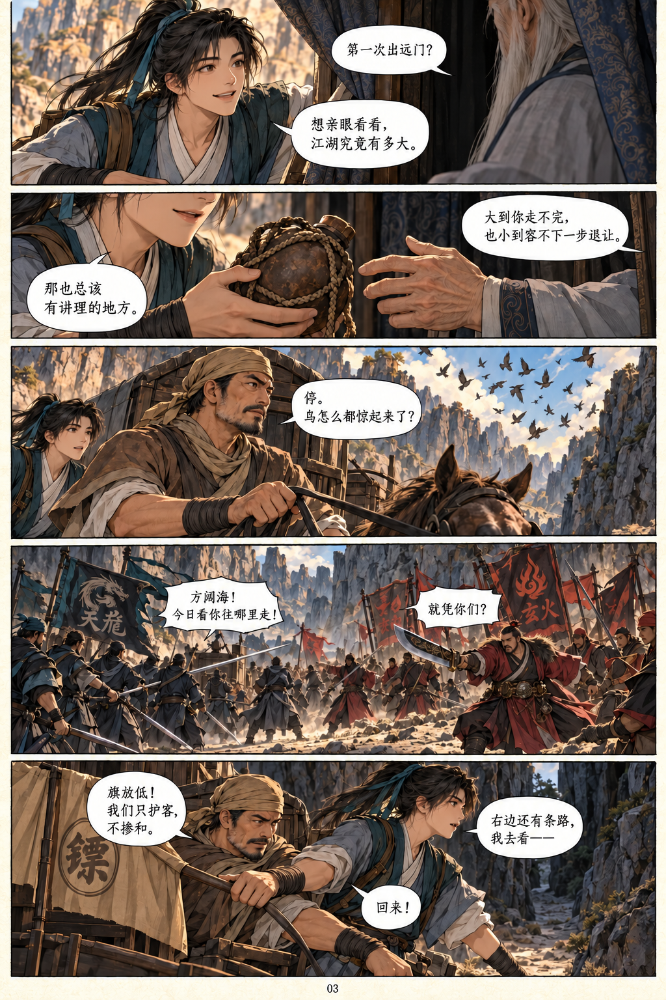
本页逐格文字
01车中人：第一次出远门？
宇文逸：想亲眼看看，江湖究竟有多大。
02车中人：大到你走不完，也小到容不下一步退让。
宇文逸：那也总该有讲理的地方。
03老镖师：停。鸟怎么都惊起来了？
04天龙帮众：方阔海！今日看你往哪里走！
玄火教众：就凭你们？
05老镖师：旗放低！我们只护客，不掺和。
宇文逸：右边还有条路，我去看——
老镖师：回来！
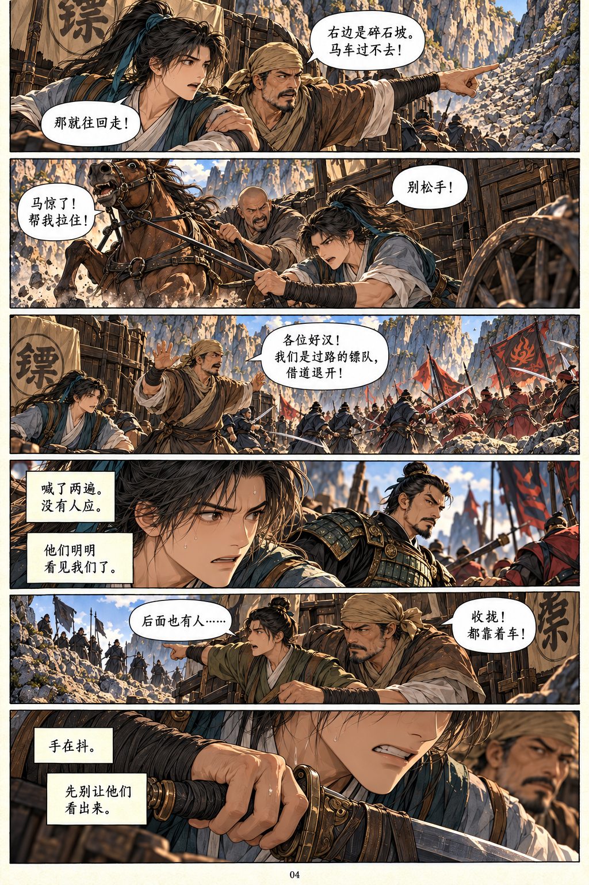
本页逐格文字
01老镖师：右边是碎石坡。马车过不去！
宇文逸：那就往回走！
02车夫：马惊了！帮我拉住！
宇文逸：别松手！
03老镖师：各位好汉！我们是过路的镖队，借道退开！
04宇文逸（心声）：喊了两遍。没有人应。
宇文逸（心声）：他们明明看见我们了。
05年轻镖师：后面也有人……
老镖师：收拢！都靠着车！
06宇文逸（心声）：手在抖。
宇文逸（心声）：先别让他们看出来。
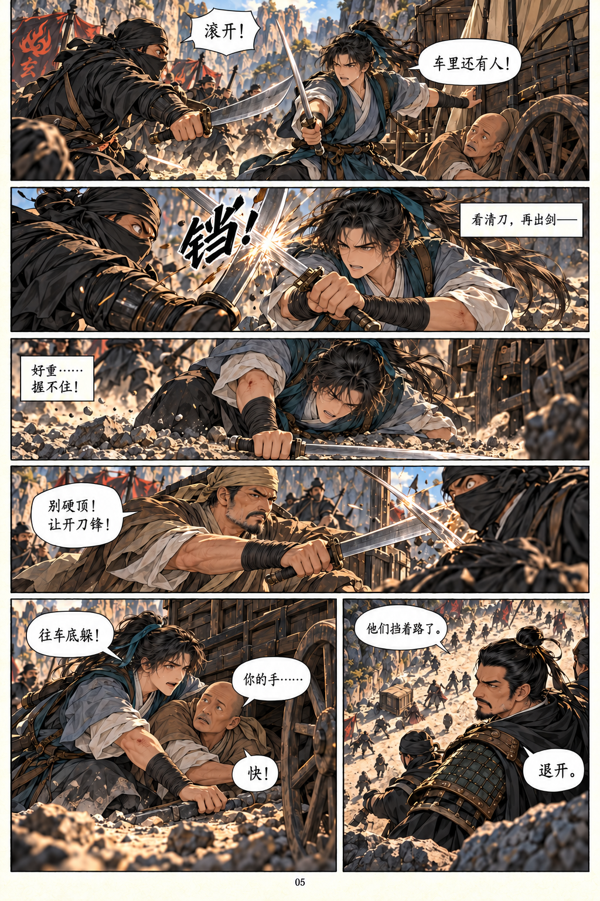
本页逐格文字
01黑衣帮众：滚开！
宇文逸：车里还有人！
02宇文逸（心声）：看清刀，再出剑——
音效：铛！
03宇文逸（心声）：好重……握不住！
04老镖师：别硬顶！让开刀锋！
05宇文逸：往车底躲！
车夫：你的手……
宇文逸：快！
06帮众：他们挡着路了。
陈武：退开。
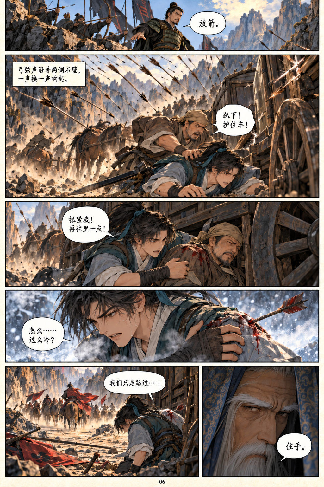
本页逐格文字
01陈武：放箭。
02弓弦声沿着两侧石壁，一声接一声响起。
老镖师：趴下！护住车！
03宇文逸：抓紧我！再往里一点！
04宇文逸：怎么……这么冷？
05宇文逸：我们只是路过……
06车中人：住手。
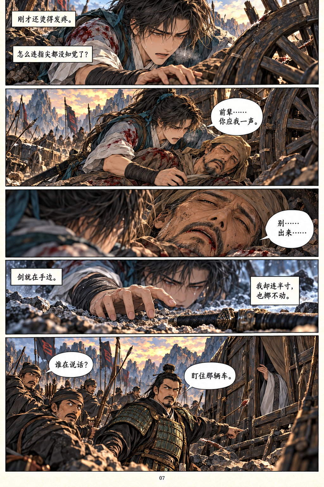
本页逐格文字
01宇文逸（心声）：刚才还烫得发疼。
宇文逸（心声）：怎么连指尖都没知觉了？
02宇文逸：前辈……你应我一声。
03老镖师：别……出来……
04宇文逸（心声）：剑就在手边。
宇文逸（心声）：我却连半寸，也挪不动。
05帮众：谁在说话？
陈武：盯住那辆车。
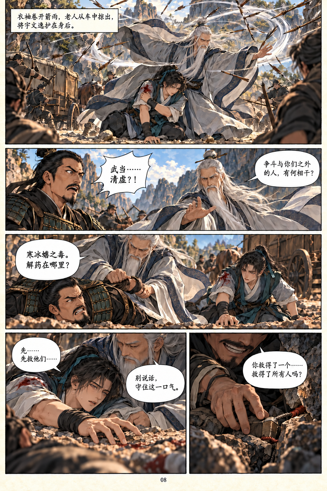
本页逐格文字
01衣袖卷开箭雨，老人从车中掠出，将宇文逸护在身后。
02陈武：武当……清虚？！
清虚：争斗与你们之外的人，有何相干？
03清虚：寒冰蟾之毒。解药在哪里？
04宇文逸：先……先救他们……
清虚：别说话，守住这一口气。
05陈武：你救得了一个……救得了所有人吗？
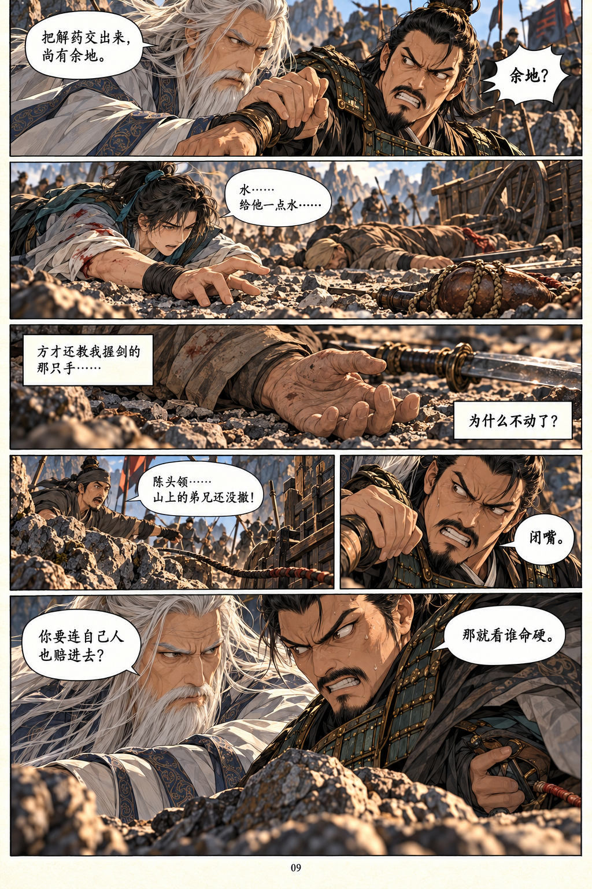
本页逐格文字
01清虚：把解药交出来，尚有余地。
陈武：余地？
02宇文逸：水……给他一点水……
03宇文逸（心声）：方才还教我握剑的那只手……
宇文逸（心声）：为什么不动了？
04帮众：陈头领……山上的弟兄还没撤！
05陈武：闭嘴。
06清虚：你要连自己人也赔进去？
陈武：那就看谁命硬。
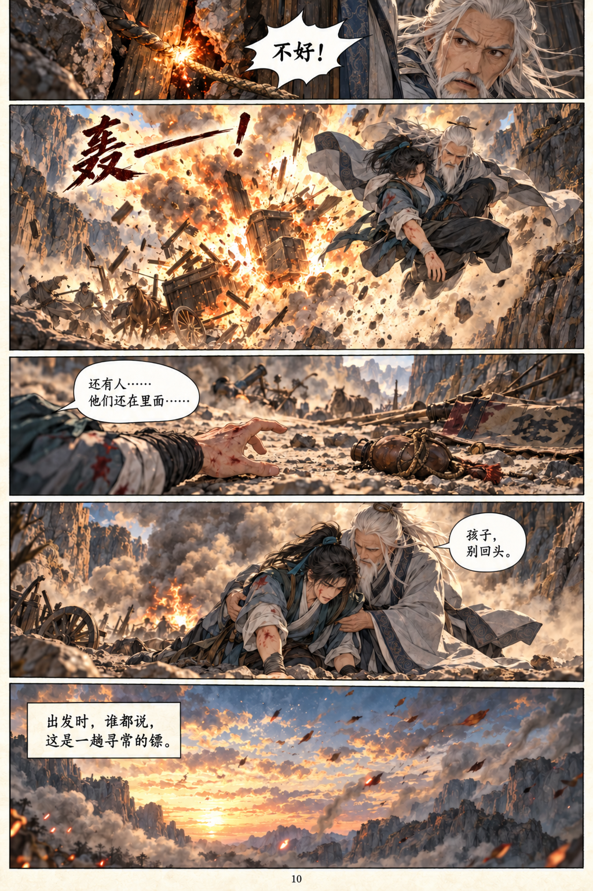
本页逐格文字
01清虚：不好！
02轰——！清虚携宇文逸跃离爆炸。
03宇文逸：还有人……他们还在里面……
04清虚：孩子，别回头。
05出发时，谁都说，这是一趟寻常的镖。
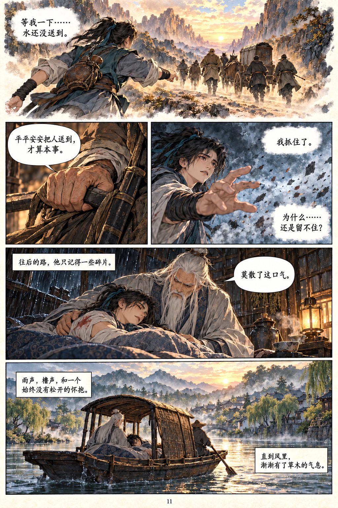
本页逐格文字
01宇文逸（梦中）：等我一下……水还没送到。
02回忆中的声音：平平安安把人送到，才算本事。
03宇文逸（心声）：我抓住了。
宇文逸（心声）：为什么……还是留不住？
04旁白：往后的路，他只记得一些碎片。
清虚：莫散了这口气。
05旁白：雨声，橹声，和一个始终没有松开的怀抱。
旁白：直到风里，渐渐有了草木的气息。
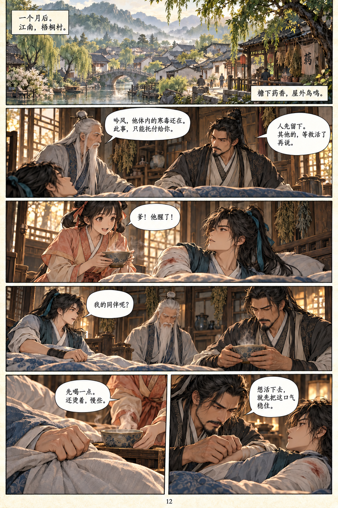
本页逐格文字
01一个月后。江南，梧桐村。
檐下药香，屋外鸟鸣。
02清虚：吟风，他体内的寒毒还在。此事，只能托付给你。
江吟风：人先留下。其他的，等救活了再说。
03江小彤：爹！他醒了！
04宇文逸：我的同伴呢？
05江小彤：先喝一点。还烫着，慢些。
06江吟风：想活下去，就先把这口气稳住。
第一集 完 · 下集《梧桐村里有个姑娘》